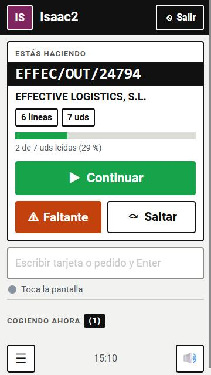
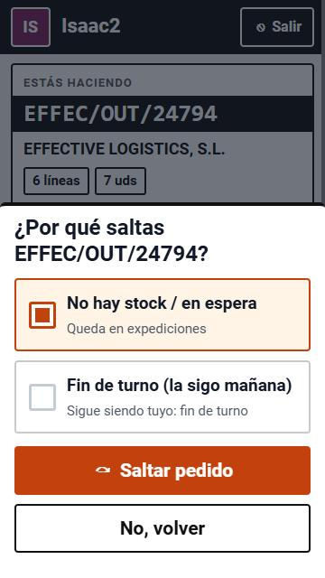
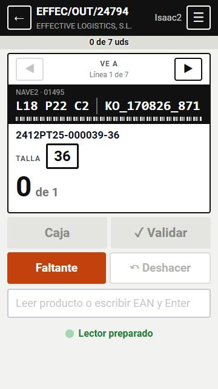
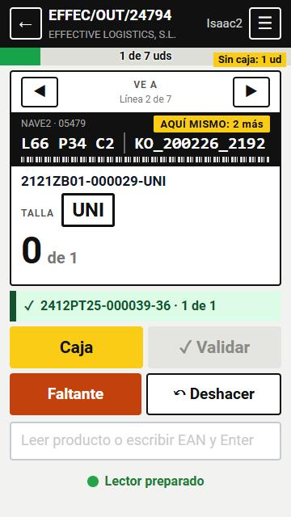
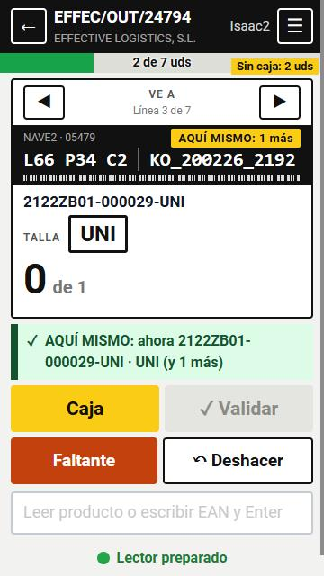
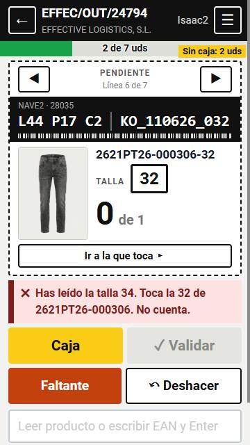
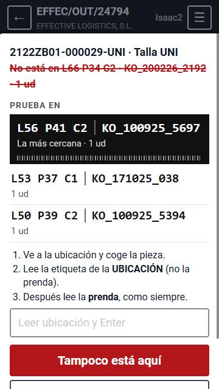
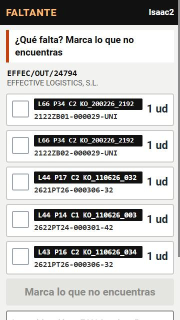
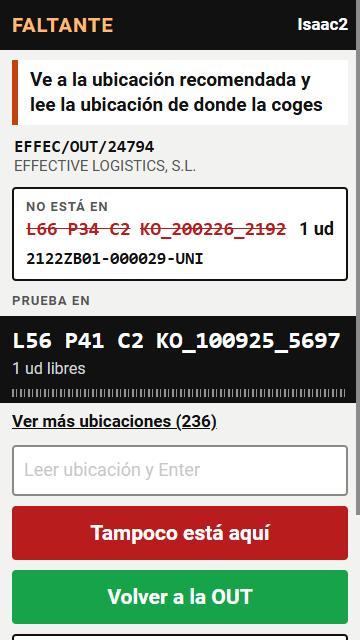

Cómo se prepara una OUT suelta en la PDA sin salir de Lecturas: leer la tarjeta, ir por la ruta que menos se anda, leer las prendas, cerrar caja y validar. Y qué hacer cuando una prenda no está donde dice Odoo.
En la pantalla de inicio de Odoo, pulsar el icono Lecturas (PDA) (una «L» blanca con código de barras sobre fondo azul oscuro). Lo ven todos los usuarios.
Leer la tarjeta del operario. La PDA se queda con él hasta que pulse Salir, aunque se recargue la página.
Se abre sola la primera OUT de su cola.
Salir (arriba a la derecha) → «Sí, salir»: la PDA queda libre para otro operario y vuelve a la pantalla de inicio de Odoo. Para volver a entrar, el icono Lecturas (PDA).
El icono en la pantalla de inicio y que «Salir» lleve allí llegan con Operarios 2.7. Si no ha salido todo esto, falta instalar esa versión. Si la PDA no hace nada un rato, sale sola del operario pero se queda en Lecturas.
En la PDA (pantalla estrecha) no sale la barra de menús de Odoo en Lecturas, Preparar ni Faltante: más sitio para lo importante.
Es la pantalla de antes de entrar en la OUT y de después de salir con ←.

Al pulsar Saltar hay que elegir por qué:
Después, Saltar pedido para confirmar o No, volver.
En Odoo, la pestaña y el filtro se llaman ahora En expediciones (Inventario → KOROSHI Operarios → Colas).

Todo cabe en una pantalla de PDA sin mover arriba y abajo. De arriba abajo:
Leer la ubicación (la caja KO o el hueco) salta a la línea de esa ubicación. Leer la prenda suma 1 ud al momento, aunque Odoo vaya lento.

Las líneas de la OUT ya no van por el nombre de la ubicación sino por el camino más corto andando, saliendo de los muelles y volviendo a ellos. La PDA lleva al operario por ese orden con «Ve a».
Cómo calcula los metros, con el plano de la NAU-2:
OUT reales ya validadas, misma fórmula de metros para las dos.
| OUT | Líneas | Antes | Ruta nueva | Menos |
|---|
Si en la misma parada (mismo pasillo y misma posición) quedan más líneas por coger, la etiqueta de la ubicación lo dice en amarillo: AQUÍ MISMO: 2 más. Así no se va de la ubicación con algo pendiente.
Y al completar una línea, si la siguiente está en el mismo sitio, el aviso verde dice qué coger ahora: «AQUÍ MISMO: ahora 2122ZB01-000029-UNI · UNI (y 1 más)».


El error más típico: coger la talla de al lado. Si se lee una talla del mismo modelo que no es la del pedido (o una talla que ya está completa) y del modelo falta otra, la PDA lo dice claro en rojo:
✖ Has leído la talla 34. Toca la 32 de 2621PT26-000306. No cuenta.
No cuenta, suena el zumbido de error y la tarjeta enseña la línea de la talla que toca, con su foto y su ubicación.
El modelo se saca del nombre MODELO-COLOR-TALLA. Si la prenda no es de ningún modelo de la OUT, sigue saliendo «no es de este pedido».

Cada caso suena distinto, para saber qué ha pasado sin mirar la pantalla. La vibración también cambia. Se apagan con el altavoz de abajo a la derecha en Lecturas.
Cuando la prenda no está en la ubicación de la tarjeta, botón Faltante (naranja). Sale dónde hay más, la más cercana en la etiqueta negra:
Ve a la ubicación y coge la pieza.
Lee la etiqueta de la UBICACIÓN (no la prenda). Así Odoo cambia la línea a esa ubicación y la pieza que faltaba va a FALTANTE.
Después lee la prenda, como siempre, en la tarjeta normal («Cambiada a… Ahora lee el producto»).
Si tampoco está, Tampoco está aquí (dos pulsaciones): va a faltantes y la línea se queda sin reservar. Marcar varias a la vez abre la pantalla Faltante.

Se abre con Faltante desde Lecturas, o con «Marcar varias a la vez». Sirve para marcar varias líneas de golpe al final de la OUT.
¿Qué falta? Cada línea enseña la ubicación en grande y en negro y debajo la prenda. Marcar las que no se encuentran y Continuar.
Para cada una: NO ESTÁ EN (tachada) y PRUEBA EN, la ubicación más cercana con stock libre. «Ver más ubicaciones» enseña el resto.
Ir allí, leer la ubicación de donde se coge. Si no está, Tampoco está aquí.
Al acabar, Volver a la OUT y leer las prendas.

